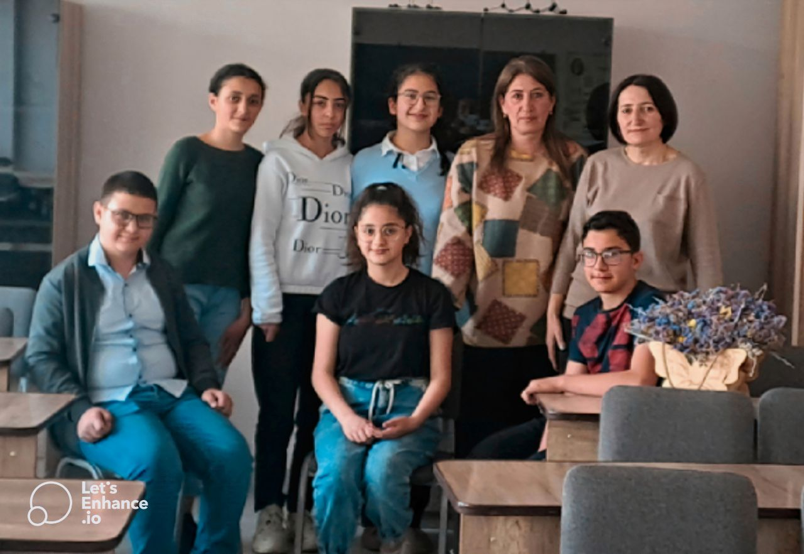
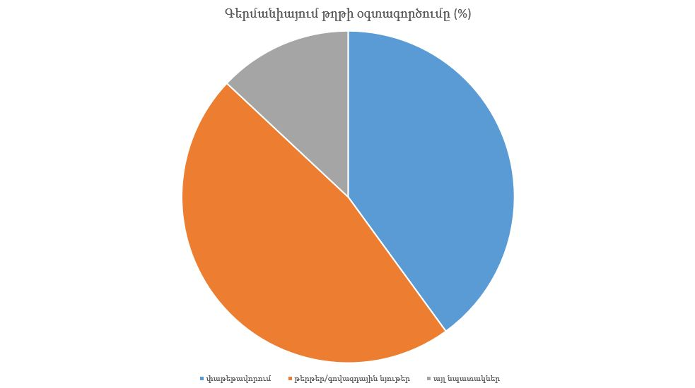

Մեր ղեկավարներն են՝
Հրաչուհի Հովակիմյանը
Նինել Ամիրխանյանը։
Մեր խմբի անդամներն են՝
Սաթինե Հովհաննեսյանը- նախագծի կառավարիչ
Նարե Գասպարյանը- ժամանակի և աշխատանքների կառավարիչ
Արամ Ավագյանը- հաղորդակցության կառավարիչ
Մանե Գևորգյանը- հետազոտության համակարգող
Տաթև Հայրապետյանը և Շավարշ Աղայանը- հանրային կապերի պատասխանատուներ
UNISEF միջազգային կազմակերպությունը Հայաստանի 500 դպրոցներին առաջադրանք է տվել՝ յուրաքանչյուր դասարան պետք է ներկայացնի գոնե 1 նախագծային աշխատանք, որպես հիմք ընդունելով որևէ հիմնախնդիր։ Մենք ընտրել ենք աղտոտվածության հիմնախնդիրը։ Սիսիանում այն մեծ տարածում ունի։
Սիսիանում մեծ տարածում ունեն պլաստիկ և պոլիեթելային թափոնները։ Դրանք հանդիպում են ամեն քայլափոխին, աղտոտվածության 2 պատճառներն են՝
1.բնակչության տեղեկացված չլինելը
2.թափառական շները։
Երկրորդ կետի հետ մենք անզոր ենք, սակայն մենք կարող ենք տեղեկացնել մարդկանց աղբի վնասի մասին։ Մենք կատարել ենք նախագծային աշխատանքը պլանով՝
Մեր տետրերի մեջ սայթերից և հանրագիտարաններից դուրս ենք գրել տեղեկատվություն
կազմել 5 բովանդակալից հարց, և անցկացրել հարցազրույցներ մարդկանց հետ
հարցազրույց անցկացրել քաղաքապետի հետ
ամփոփել ենք տվյալները
սկսել պատրաստել սլայդ և տեսանյութ։
Մի քիչ պաշտոնական վիճակագրություն
 Ամեն տարի տարբեր երկրներում 1 շունչը սպառում է՝
Ամեն տարի տարբեր երկրներում 1 շունչը սպառում է՝
Ինդոնեզիա 20կգ
Ֆինլանդիա 300կգ
Գերմանիա 251 կգ
Աշխարհ 58 կգ թուղթ
Այժմ կուսումնասիրենք, թե ինչ նպատակներով է թուղթը ծախսվում Գերմանիայում
Գերմանիայում թուղթը օգտագործում են տվյալ նպատակներով՝
փաթեթավորում 40%
թերթեր/գովազդային նյութեր 47%
այլ նպատակներ 13%